The flicker phenomenon caused by the mismatch between PWM-driven LED traffic lights and camera frame rates
degrades the reliability of traffic-light perception in autonomous driving systems. This paper presents
a rule-based baseline method and a diffusion-based restoration approach, termed DiffuFlicker.
DiffuFlicker employs a class-conditioned temporal 3D U-Net together with an SDEdit-based adaptive restoration strategy,
enabling robust recovery under both high-frequency (HFF) and low-frequency (LFF) flicker conditions.
Experimental results on 144 synthetic video sequences demonstrate that DiffuFlicker achieves an average
PSNR improvement of +6.35 dB, outperforming the rule-based baseline, which yields a +5.27 dB gain,
by a margin of 1.08 dB.
LED Traffic Light Flicker Problem
Modern LED traffic lights use PWM (Pulse Width Modulation) for energy efficiency.
When the PWM frequency mismatches with camera frame rates, captured videos show flicker artifacts.
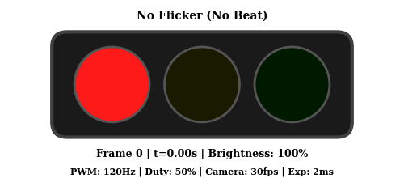
No Flicker (Normal)
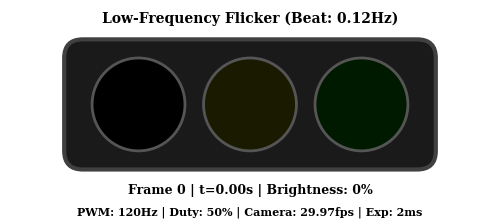
Low-Frequency Flicker (LFF)
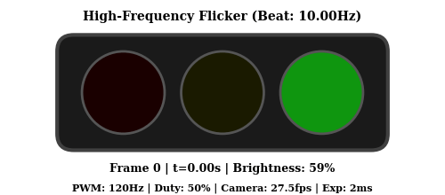
High-Frequency Flicker (HFF)
High-Frequency Flicker (HFF)
Rapid on-off transitions across consecutive frames due to direct PWM-camera interference.
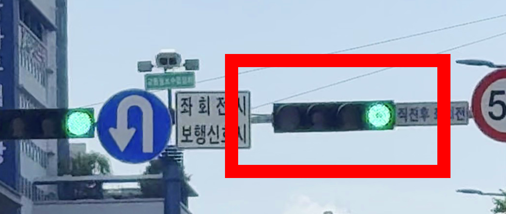
t
t+1
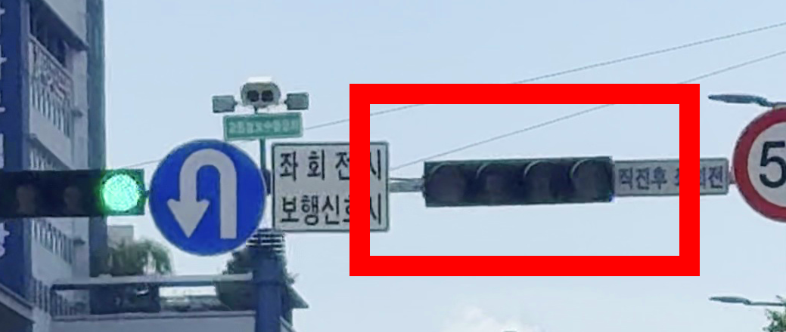
t+2
t+3
Low-Frequency Flicker (LFF)
Gradual brightness variations over tens of frames due to beat phenomenon.
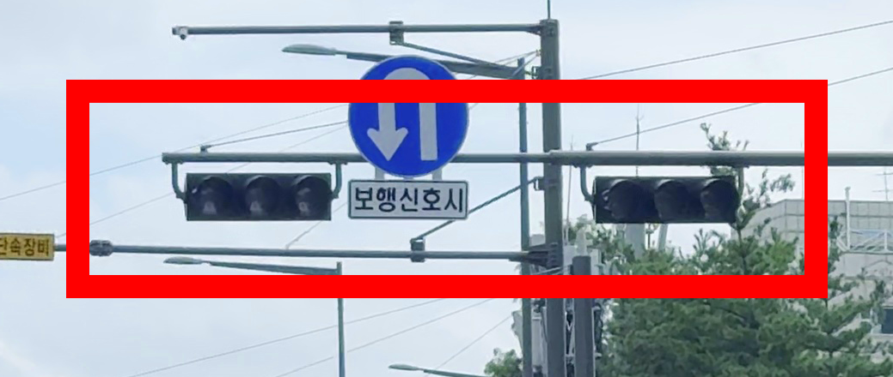
t
t+20
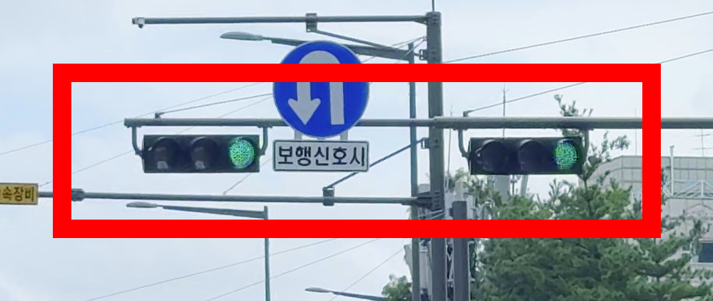
t+28
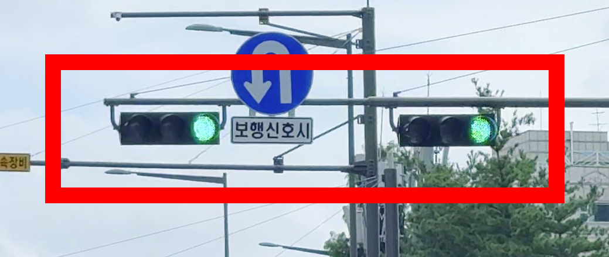
t+52
Method Overview
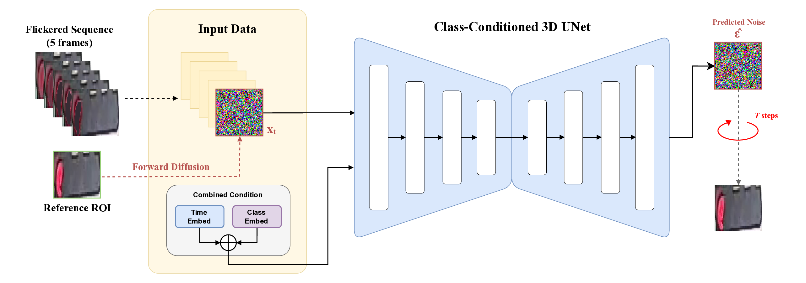
DiffuFlicker uses a class-conditioned temporal 3D U-Net with SDEdit-based adaptive restoration.
The model takes 10 consecutive ROI frames as input, leveraging temporal context from preceding frames
to restore the target frame. Two conditions guide the restoration: (1) a reference ROI from the brightest frame,
and (2) a class embedding representing one of 8 traffic light states.
Experimental Results
Quantitative Results
Performance comparison on 144 synthetic flicker video sequences (PWM: 90, 100, 120 Hz × FPS: 27.5, 29.97).
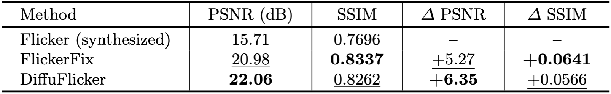
Table 1. Flicker removal performance comparison against GT. The best results are marked in bold and the second-best results are underlined.
DiffuFlicker achieves +6.35 dB PSNR improvement, outperforming FlickerFix by 1.08 dB.
FlickerFix shows higher SSIM due to its reference-mask-based deterministic synthesis,
while DiffuFlicker achieves superior pixel-level reconstruction accuracy.
Qualitative Comparison on Synthesized Videos
From top to bottom: Original (GT), Flickered input, FlickerFix result, DiffuFlicker result.
Original (GT)FlickeredFlickerFixDiffuFlicker (Ours)
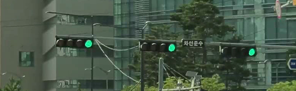
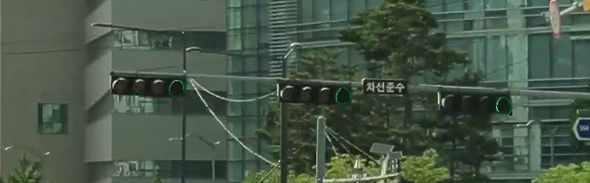
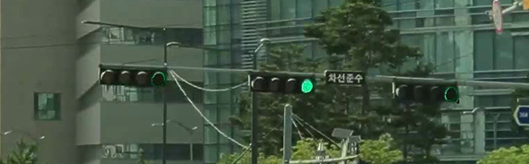
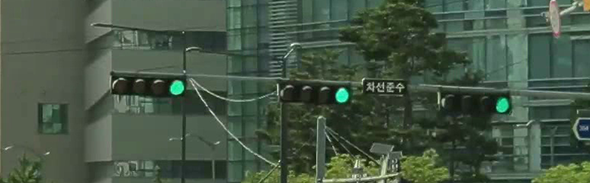
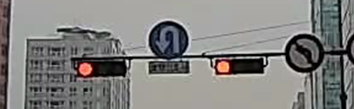
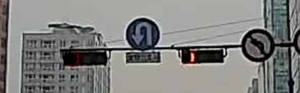
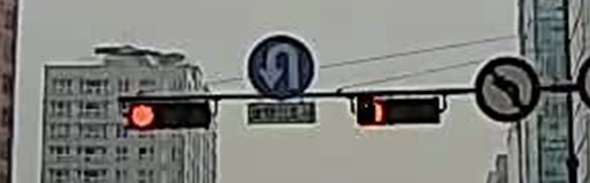
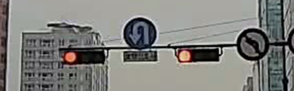
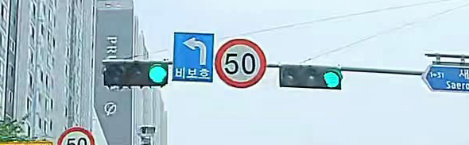
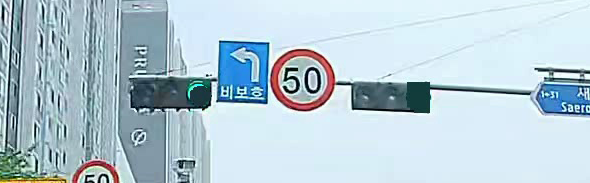
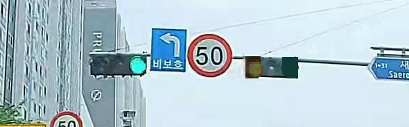
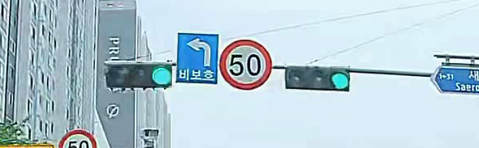
Results on Real-World Dashcam Videos
No ground truth available - qualitative comparison only. Consecutive 4 frames (t, t+1, t+2, t+3).
OriginalFlickerFixDiffuFlicker (Ours)
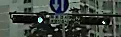
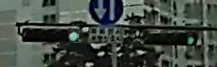
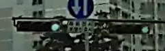
tt+1t+2t+3
Ablation Studies
Analysis of DiffuFlicker performance across different conditions.
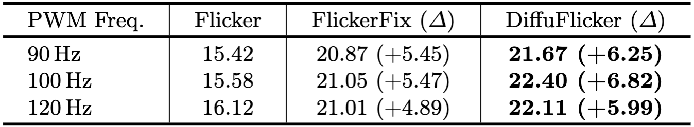
Table 2. PSNR restoration performance by PWM frequency (dB). The best results are marked in bold.
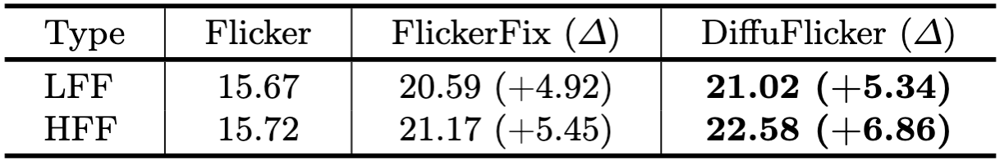
Table 3. PSNR restoration performance by flicker type. The best results are marked in bold.
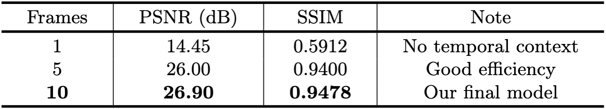
Table 4. Ablation study on temporal context length. The model with 10 frames achieves the best performance.